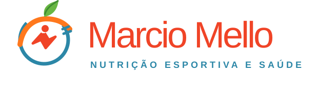

Individualidade
Condutas alinhadas à sua realidade, não a modelos genéricos.

Nutrição esportiva e clínica com avaliação individualizada, orientação prática e acompanhamento próximo — respeitando sua rotina e sua realidade.
Meu trabalho é transformar informação nutricional em decisões possíveis no dia a dia. O planejamento considera seus objetivos, preferências, histórico, rotina e resposta individual.
Sem fórmulas prontas ou promessas irreais: cada conduta começa com uma avaliação cuidadosa e é ajustada conforme sua evolução.
Condutas alinhadas à sua realidade, não a modelos genéricos.
Decisões orientadas por avaliação e evidências.
Acompanhamento para avaliar respostas e ajustar estratégias.
O ponto de partida é entender o que você precisa — e o que é viável manter.
Planejamento alimentar para apoiar desempenho, recuperação e evolução nos treinos.
Quero saber mais ↗Estratégias nutricionais individualizadas para cuidado da saúde e melhora da relação com a alimentação.
Quero saber mais ↗Acompanhamento de medidas e indicadores para orientar ajustes ao longo do processo.
Quero saber mais ↗A consulta reúne informações clínicas, hábitos e medidas para construir uma estratégia coerente com seu momento.
Quero começar ↗Levantamento do histórico, rotina, sintomas, hábitos e objetivos.
Quando indicado, avaliação por bioimpedância (BIA), adipômetro e medidas antropométricas.
Estratégia individualizada, explicada e entregue durante a consulta.
Espaço para dúvidas, dificuldades e avaliação da adaptação ao plano.
Ao longo do acompanhamento, observamos sua percepção, rotina, evolução do peso e das medidas, funcionamento intestinal, retenção, dificuldades e pontos que precisam de ajuste. A estratégia deve evoluir junto com você.
Entre em contato para saber mais sobre os atendimentos e verificar os horários disponíveis.
Fale diretamente para receber informações sobre o atendimento.
Conversar pelo WhatsApp ↗O contato será configurado assim que o número profissional for informado.